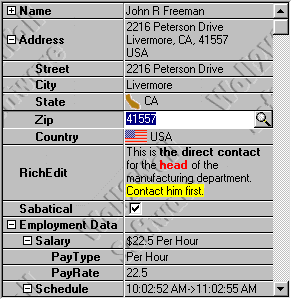
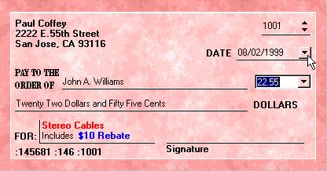
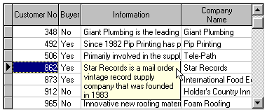
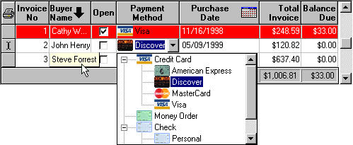
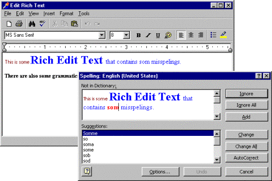
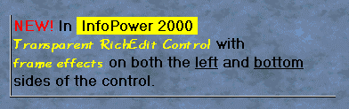
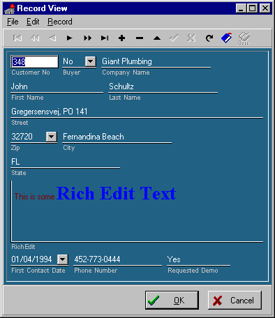

The following document details some of the new functionality in InfoPower 2000. This version of InfoPower will support Delphi 4, 5, and C++ Builder 4.
In the past InfoPower would require a subclassed version of any dataset in order to use it with the InfoPower controls. The new InfoPower 2000 design allows you to use the native Delphi TDataSet components directly, without requiring that you use the InfoPower TwwDataSet or TwwDataSource versions.
With InfoPower 2000’s new design, you can simply drop in an InfoPower component and set its datasource property. You do not need to have a subclassed versions as you did in the past.
InfoPower’s picture mask design tools now use an INI file to store your custom picture masks. In the past a Paradox table was used to store these settings in your IDE environment. However to remove the necessity of installing the BDE in your design time environment, InfoPower no longer uses this Paradox table.
InfoPower 2000 provides a new robust component that allows you to
hierarchically edit a single record consisting of multiple datasets.
This component allows you to display a record similar to the way you
edit/view an object in the Delphi object inspector. It has substantial advantages over more traditional ways of
editing, including the ability to group related fields together (even from
different datasets), provide a hierarchical view, conserve screen real-estate,
embed custom controls, display a background image, and much more. It can also be used without a datasource,
which significantly increases the way this component can be used. See
the demo in the \ip2000\demos\inspector directory

InfoPower 2000 gives you the means to create elegant forms that look just like the real hardcopy form
they are based on. Each control's transparent and custom framing effects can even display
underline controls that are transparent. However the custom framing goes far beyond simple underline controls as you can display the borders in many different frame styles. You can additionally disable any edge from being displayed. See the demo in the \ip2000\demos\framing directory.

Form
displayed as a check, using InfoPower’s transparent edit controls and custom
framing
The combo buttons in the edit controls can also be displayed in a flat style and transparently as well for an extremely natural look. Notice the buttons in the edit controls in the screen-shot above.
The grid now can automatically stream its current display settings to and
from an INI file during program execution.
This allows the end-user to conveniently order and size the columns and
then save their settings for the next time they run your application.
The new property to enable and customize the INI file handling is defined
in the IniAttributes property.
IniAttributes
Delimiter
Enabled
FileName
SectionName
Often when using a grid, all
the text of a cell does not entirely fit in the cell. In the past, the user
would need to manually enlarge the column by dragging the cell's caption lines.
InfoPower 2000 makes this much more convenient by automatically displaying the
full text of a cell as a tool tip when the mouse is moved over the cell. The tool tips also support memo fields and
multiple lines. Set the dgShowCellHint
to True to enable this behavior. Use
the OnCreateHintWindow to customize the dimensions and characteristics of the hint
window.

InfoPower 2000 allows you to add a whole new library of components that you can embed into the InfoPower grid, as well as into the new Data Inspector. The screen shot below shows the 1stClass TreeCombo embedded into the InfoPower grid.

The InfoPower 2000 navigator updates its appearance by allowing you to transparently display the navigator and its related buttons. This helps your applications present a very professional and polished look.
To help ease the use of customizing the navigator’s actions, action list support is now supported for each navigator button.
InfoPower 2000’s RichEdit word processor can now directly utilize the spell checker and grammar checker included with Microsoft Word. The dictionaries and spelling options that the user has previously defined in their Microsoft Word environment are automatically used. Your end-users will need Microsoft word in order to take advantage of this functionality.
Set the EditorOptions.reoShowSpellCheck to True to have a spelling speed button appear in the pop-up word processor. Set the PopupOptions | rpoPopupMSWord to True to add a spell check menu selection when you right-click the control.

The richedit control can now be displayed transparently when it does not have the focus. See the Frame property, and set the Frame.enabled and Frame.Transparent properties to True.

The end-user can now set the background color of selected text. This allows certain text to stand-out. User highlighting is integrated as a new button in the word processor.
The word processor has updated the appearance of its menu by displaying bitmaps next to certain menu selections.
You can now more easily change the behavior of the common menu selections from the word processor with the introduction of the following new events:
OnMenuLoadClick, OnMenuPrintClick, OnMenuSaveAndExitClick, OnMenuSaveAsClick
InfoPower 2000 now can modify the Filter property of your dataset, as in the past it performed its filtering strictly through the callback OnFilterRecord event of the dataset. The Filter property, although more limited in functionality, can offer significant performance benefits when filtering larger datasets. Use the new FilterPropOptions property to enable InfoPower to use the Filter property. The details of this property are described in the document FilterDialog.doc.
You can now map user entered text to a specific database value. This can allow the user to filter based on some more meaningful text even if that text is not stored in the database. For instance if the database was storing the codes 1, 2, 3, and they respectively represented the strings ‘ Visa’, ‘Mastercard’, ‘American Express’, you could allow the user to enter the string ‘Visa’ instead of ‘1’.
See filterdialog.doc included in this document for a detailed description of the new filterdialog properties.
The TwwRecordViewDialog and TwwRecordViewPanel support custom framing and allow for the label to be placed beneath the control. Thus, without writing any code, nor having to waste any time in laying out your edit controls, you can create sophisticated forms. The following example uses custom framing and a transparent background.

Set the Options | tvoLabelsBeneathControls to true to place labels
underneath their related edit control. Set
the EditFrame property to customize how the controls borders and background are
painted.
For instance, set the EditFrame.Enabled
and EditFrame.Transparent properties to True to display the edit
controls transparently.
Use the OnSetControlEffects event
to override the RecordView's EditFrame settings for an individual or selected
control. For instance the following
code in this event will place a left-border when the edit control is tied to a
TBlobField.
procedure TRecordViewDemoForm.wwRecordViewDialog1SetControlEffects(
Form: TwwRecordViewForm;
curField: TField; Control: TControl;
Frame: TwwEditFrame;
ButtonEffects: TwwButtonEffects);
begin
if curfield is tBlobfield then
begin
Frame.NonFocusBorders:=
Frame.NonFocusBorders + [efLeftBorder];
end
end;
TwwIncrementalSearch and TwwDBLookupCombo now support a DelayTimer property for their incremental searching. This property controls how many milliseconds to wait before beginning the search for the user’s entered text. The purpose of this property is to reduce the number of searches that are performed as the user enters characters. Setting this to a larger value may improve your performance as fewer searches will need to be performed. Setting this to a smaller value will cause the search to begin more quickly. This property defaults to 0, which tells the control to determine the best delay. Currently 333 milliseconds is used by the control for the delay.
The TwwDBComboBox, TwwDBDateTimePicker, and TwwDBLookupCombo can now be assigned custom glyphs . See the Glyph and ButtonStyle property.